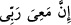
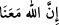
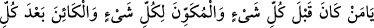
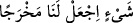

topraktan öncedir.” dedi.
“Bana yol gösterecektir.” Mutlaka bana onlardan tamamen kurtulmanın yolunu
gösterecektir. “dedi.”
Muhakkıklar şöyle demiştir: Mûsâ (a.s.) sözünde maiyyeti/beraberliği önce
zikrederek “__WORD__ Rabbim şüphesiz benimledir.” demiştir. Bizim Peygamberimiz
(a.s.) ise “__WORD__ Allah bizimledir.” (et-Tevbe, 9/40) buyurarak maiyeti/beraberliği
sonra getirmiştir. Ki âriflerin gönlüne âşikâr eyledi ki Kelîmullah olan Mûsâ (a.s.),
kendinden, kendi zâtından Hakk’a baktı. Bu müridin makamıdır. Habîbullah olan Hz.
Peygamber (a.s.) ise Hak’tan kendisine nazar etti. Bu da murâdın makamıdır. Müride ne
söylenirse onu yapar, murâd olan ise ne söylerse onu yaparlar.
Birisinin yüzü dosta doğrudur, kendisini Hakk’ın zâtında görür
Diğerinin ise yüzü kendinedir, kendinde Hakk’ı görür.
Keşfü’l-esrâr’da der ki: “Mûsâ (a.s.) kendisine “Rabbim benimledir” dedi,
“Rabbimiz bizimledir.” demedi. Çünkü ezelde İsrailoğullarından bir topluluğun Fir’avn
ve kıbtîlerin helâkinden sonra buzağıya tapacaklarına hükmedilmişti.
Hz. Peygamber (s.a.) Hz. Sıddîk-i Ekber ile mağarada iken Hz. Ebû Bekir’in
hallerinden o mânâ hakikatlerini sezince onu kendine yakın kıldı, maiyyet-i ilâhîye
götürdü ve şöyle buyurdu: “Allah bizimledir.” (et-Tevbe, 9/40).
Denildi ki; Musa (a.s.) kendisi için “Rabbim şüphesiz benimledir, bana yol
gösterecektir.” demiştir. İzzet sâhibi olan Allah Muhammed ümmeti için ise “Allah,
takvâ sâhipleri/(kötülükten) sakınanlar ve ihsân ehli/güzel amel edenlerle
beraberdir.” (en-Nahl, 16/128) buyurmuştur. Musa’nın kendisi için söylediğini Allah
Teâlâ yerine getirdi, onu reddetmedi ve ona kurtuluş yolunu gösterdi. Düşmanın hile ve
tuzağını ortadan kaldırdı. Allah Teâlâ kendi lütuf ve inâyetinden Muhammed ümmeti
için “Allah takvâ sâhipleri ile beraberdir.” buyurdu. Dünyada da günah gam ve
tasasından kurtarıp rahmet ve mağfiretine ulaştıracağını vaad etti; O vaadini yerine
getirir.
Rivâyete göre Fir’avn âilesinden îman eden kimse Mûsâ (a.s.)’ın önündeydi. Ona:
“Hangi tarafa gitmekle emrolundun? Önünde de bu deniz var. Fir’avn hânedanı da
etrafını sarmış!” Mûsâ (a.s.): “Denize (girmekle) emrolundum. Umulur ki ne yapacağım
da bana emrolunur.” diye cevap verdi.
Abdullah b. Selâm’dan rivâyet edildiğine göre o şöyle demiştir: “Mûsâ (a.s.), denize
varınca şöyle duâ etti:
__WORD__
__WORD__
“Ey herşeyden önce var olan, her şeyi yaratan, her şeyden sonra yine var olacak
olan Allah’ım! Bize bir çıkış yolu ver.”